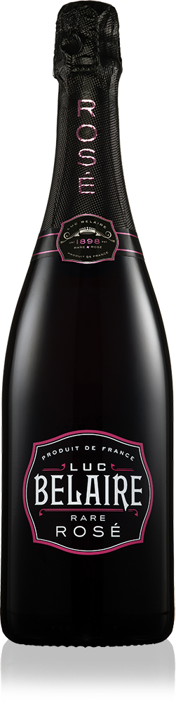
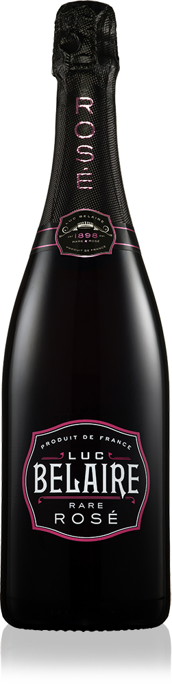
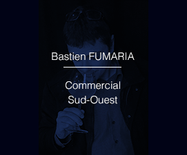
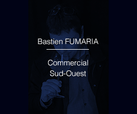

OUVERTURE D’UN POP UP STORE - FASHION WEEK PARIS
G’Vine célèbre l’ouverture de la boutique éphémère Iris Cantabri
OUVERTURE D’UN POP UP STORE - FASHION WEEK PARIS
C’est dans le quartier du Marais à Paris que la jeune marque de prêt-à-porter Iris Cantabri au style minimaliste et innovant, à ouvert les portes de son nouvel espace éphémère. L’équipe de Renaissance Spirits et la marque G’Vine Gin n’ont pas manqué de célébrer l’inauguration des lieux pour une durée de 6 mois, du 5 février au 31 juillet 2016.


 



 
